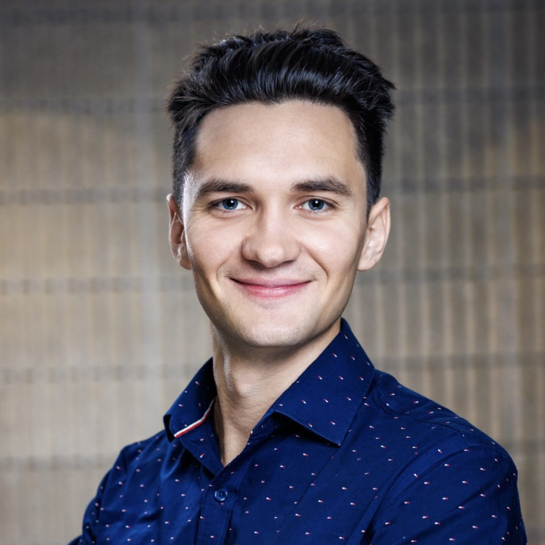

San Francisco Bay Area, California
Artem Tkachuk
Infrastructure engineer. I work on the layer that decides where containers run and how much machine they get.
Three years on Netflix's container platform. Now building an AI stack that runs entirely on hardware I own.
Building now
A sovereign AI stack
All inference is local. No cloud API keys, every service bound to loopback and reachable only over my tailnet.
- llama.cppVulkan/RADV backend
- litellmmodel routing
- hermesagent, native systemd unit
- langfusetraces and cost
- searxngprivate search
Netflix · 2023 to 2026
Titus, the container platform
Tech lead for a squad of five on compute runtime: container runtimes, CPU isolation, cost attribution and incident response on Netflix's Kubernetes-based platform.
GitHub
@artem-tkachuk
Open profile →Open source
Upstream work
Side project · in progress
A focus-music stream that never ends
A 24/7 YouTube livestream of music generated live on a Mac Studio, steerable from chat.
Talk
KubeCon speaker
Where’s My Pod? End-to-End Tracing for Kubernetes With OpenTelemetry Watch →Class of 2023
UC Berkeley
B.A. Computer Science, ML emphasis
B.A. Applied Mathematics
Off hours
Road trips, soccer, skiing, swimming, volunteering
Writing